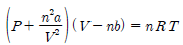
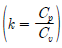
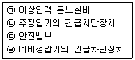
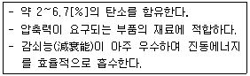

가스기능장 (2016-04-02 기출문제)
1과목: 임의 구분
1. 1시간의 공기 압축량이 2000[m3]인 공기액화 분리기에 설치된 액화산소통 내의 액화산소 5[L] 중 아세틸렌 또는 탄화수소의 탄소의 질량이 얼마를 넘을 때 운전을 중지하고 액화산소를 방출하여야 하는가?
- 아세틸렌의 질량이 1[mg]을 넘을 때
- 아세틸렌의 질량이 3[mg]을 넘을 때
- 탄화수소의 탄소의 질량이 5[mg]을 넘을 때
- 탄화수소의 탄소의 질량이 500[mg]을 넘을 때
(정답률: 86%)

2. 1[kg]의 공기가 일정 온도 200[℃]에서 팽창하여 처음 체적의 6배가 되었다. 이 때 소비된 열량은 약 몇 [kJ] 인가?
- 128
- 143
- 187
- 243
(정답률: 46%)
3. 용접 후 피닝을 하는 주된 이유는?
- 슬래그를 제거하기 위하여
- 용입이 잘 되게 하기 위하여
- 용접을 잘 되게 하기 위하여
- 잔류 응력을 제거하기 위하여
(정답률: 91%)
4. 배관 내의 압력손실에 대한 설명으로 틀린 것은?
- 관의 길이에 비례한다.
- 관 내벽의 상태와 관련이 있다.
- 관 안지름의 4승에 반비례한다.
- 유체의 점도 및 속도와 관련이 있다.
(정답률: 85%)
5. 독성가스 배관의 접합은 용접으로 하는 것이 원칙이나 다음의 경우에는 플랜지접합으로 할 수 있다. 다음 중 잘못된 것은?
- 신축이음매의 접합 부분
- 호칭지름이 50[mm] 이하인 배관 접합 부분
- 부식되기 쉬운 곳으로써 수시로 점검이 필요한 부분
- 정기적으로 분해하여 청소, 점검, 수리를 하여야 하는 반응기, 탑, 저장탱크, 열교환기 또는 회전기계 전ㆍ후의 첫 번째 접합 부분
(정답률: 83%)
6. 아세틸렌은 용기에 충전한 후 온도 15[℃]에서 압력이 몇 [MPa] 이하로 될 때까지 정치하여야 하는가?
- 1.5
- 2.5
- 3.5
- 4.5
(정답률: 90%)
7. 재검사 용기 및 특정설비의 파기방법에 대한 설명으로 틀린 것은?
- 잔가스를 전부 제거한 후 절단할 것
- 검사신청인에게 파기의 사유, 일시, 장소 및 인수시한 등을 통지하고 파기할 것
- 절단 등의 방법으로 파기하여 원형으로 재가공이 가능하게 하여 재활용할 수 있도록 할 것
- 파기하는 때에는 검사장소에서 검사원으로 하여금 직접 실시하게 하거나 검사원 입회하에 용기 및 특정설비의 사용자로 하여금 실시하게 할 것
(정답률: 94%)
8. 고압가스 저장탱크를 수리하기 위하여 탱크 안의 가스를 배출하고 불활성가스로 치환한 다음 다시 공기로 치환하였다. 탱크 안의 기체를 분석한 결과가 다음과 같을 때 작업자가 저장탱크 안에 들어가 작업이 가능한 경우는?
- 산소 15[%], 질소 85[%]
- 산소 8[%], 질소 72[%], Ar 20[%]
- 질소 80[%], 산소 19[%], 수소 1[%]
- 일산화탄소 70[ppm], 산소 17[%], 나머지 질소
(정답률: 91%)
9. 액화석유가스법 시행규칙에서 정한 다중이용시설이란 시ㆍ도지사가 안전관리를 위하여 필요하다고 지정하는 시설 중 그 저장능력이 얼마를 초과하는 시설을 말하는가?
- 100[kg]
- 300[kg]
- 500[kg]
- 1000[kg]
(정답률: 63%)
10. Dalton의 법칙을 가장 바르게 설명한 것은?
- 혼합기체의 온도는 일정하다.
- 혼합기체의 압력은 각 성분의 분압의 합과 같다.
- 혼합기체의 체적은 각 성분의 체적의 합과 같다.
- 혼합기체의 상수는 각 성분의 상수의 합과 같다.
(정답률: 80%)
11. 고압가스 안전관리법상의 당해 가스시설의 안전을 직접 관리하는 사람은?
- 안전관리 부총괄자
- 안전관리 책임자
- 안전관리원
- 특정설비 제조자
(정답률: 79%)
12. 고압가스 안전관리법에서 규정한 공급자의 의무사항에 대한 설명으로 옳은 것은?
- 안전점검을 실시한 결과 수요자의 시설 중 개선할 사항이 있을 경우 그 수요자로 하여금 당해 시설을 개선하도록 한다.
- 고압가스 수요자의 사용시설 중 개선명령을 할 수있는 자는 시ㆍ도지사이다.
- 고압가스를 수요자에게 공급할 때는 수요자에게 그 사용시설을 안전점검 하도록 한다.
- 고압가스 판매자는 고압가스의 수요자가 그 시설을 개선하지 아니할 때는 고압가스의 공급을 중단하고, 그 사실을 시ㆍ도지사에게 신고한다.
(정답률: 77%)
13. 단열압축에 대한 설명으로 맞는 것은?
- 공급되는 열량은 0 이다.
- 공급되는 일은 기체의 엔탈피 감소로 보존된다.
- 단열 압축 전 보다 압력이 감소한다.
- 단열 압축 전 보다 온도, 비체적이 증가한다.
(정답률: 73%)
14. LP가스의 일반적인 성질에 대한 설명으로 틀린 것은?
- LP가스의 밀도는 공기보다 적다.
- 순수한 LP가스는 맛과 냄새가 없다.
- LP가스는 기화 및 액화가 용이하다.
- 발열량이 크고 연소 시 많은 공기가 필요하다.
(정답률: 81%)
15. 열역학 제2법칙에 대한 설명으로 틀린 것은?
- 밀폐계에서는 어떠한 열현상에 있어서도 그 계 전체의 전 엔트로피는 적어도 보존되거나 증대하는 방향으로 진행한다.
- 작동유체가 사이클에 의해서 연속적으로 일을 발생하기 위해서는 고온 물체와 이보다 낮은 저온물체가 필요하다.
- 열은 그 자신만으로 저온도의 물체로부터 고온도의 물체로 이동할 수 없다.
- 제2종의 영구기관의 실현성을 인정하는 법칙이다.
(정답률: 69%)
16. 허용인장응력 10[kgf/mm2], 두께 10[mm]의 강판을 150[mm] V홈 맞대기 용접이음을 할 때 그 효율이 80[%]라면 용접두께 t는 얼마로 하면 되는가? (단. 용접부 허용응력은 8[kgf/mm2] 이다.)
- 10[mm]
- 12[mm]
- 14[mm]
- 16[mm]
(정답률: 53%)
17. 수소는 고온, 고압 하에서 강제 중의 탄소와 반응하여 수소취화를 일으키는데 이것을 방지하기 위하여 첨가시키는 금속원소로서 부적당한 것은?
- 몰리브덴
- 구리
- 텅스텐
- 바나듐
(정답률: 83%)
18. 암모니아를 사용하여 질산제조의 원료를 얻는 반응식으로 가장 옳은 것은?
- 2NH3 + CO → (NH2)2CO + H2O
- NH3 + HNO3 → NH4NO3
- 2NH3 + H2SO4 → (NH4)2SO4
- 4NH3 + 5O2 → 4NO + 6H2O
(정답률: 87%)
19. 지름 30[mm]의 강봉에 40[kN]의 하중이 안전하게 작용하고 있을 때 이 강봉의 인장강도가 350[MPa] 이면 안전율은 약 얼마인가?
- 2.7
- 4.2
- 6.2
- 8.1
(정답률: 47%)
20. 공기액화 분리장치 중 왕복동식 팽창기에 대한 설명으로 틀린 것은?
- 팽창비가 약 40 정도이다.
- 처리가스에 윤활유가 혼입될 우려가 없다.
- 흡입압력이 저압부터 고압까지 범위가 넓다.
- 팽창기의 효율이 약 60~65[%] 정도로서 낮은 편이다.
(정답률: 69%)
2과목: 임의 구분
21. 어떤 산소용기에 산소를 충전하고 온도 35[℃]에서 20[MPa]로 되도록 하려면 0[℃]에서는 약 몇 [MPa]의 압력까지 충전해야 하는가?
- 13.5
- 17.7
- 22.6
- 26.3
(정답률: 63%)
22. 액화프로판 20[kg]을 충전할 수 있는 용기의 내용적[L]은? (단, 액화프로판의 정수는 2.35 이다.)
- 8.5
- 20
- 47
- 65
(정답률: 70%)
23. 반데르 바알스의 식은

로 나타낸다. 메탄가스를 150[atm], 40[L], 30[℃]의 고압용기에 충전할 때 들어갈 수 있는 가스의 양은 약 얼마인가? (단, a=2.26[L2atmmol, b=4.30×10-2Lmol이다.)- 30[mol]
- 154[mol]
- 304[mol]
- 504[mol]
(정답률: 65%)
24. 액화석유가스 용기충전시설의 저장탱크에서 폭발방지장치를 의무적으로 설치하여야 하는 경우는?
- 상업지역에 저장능력 10[톤] 저장탱크를 지상에 설치하는 경우
- 녹지지역에 저장능력 20[톤] 저장탱크를 지상에 설치하는 경우
- 주거지역에 저장능력 5[톤] 저장탱크를 지상에 설치하는 경우
- 녹지지역에 저장능력 30[톤] 저장탱크를 지상에 설치하는 경우
(정답률: 93%)
25. CO2 의 기체상수 값은 약 몇 [Nㆍm/kgㆍK] 인가?
- 132
- 164
- 189
- 225
(정답률: 65%)
26. 이상기체(Ideal gas)의 성질이 아닌 것은?
- 아보가드로의 법칙에 따른다.
- 보일-샤를의 법칙을 만족한다.
- 비열비

는 온도에 관계없이 일정하다. - 내부에너지는 체적에 무관하며 압력에 의해서만 결정된다.
(정답률: 87%)
27. 고압배관용 탄소강 강관의 기호는?
- SPPS
- SPPH
- SPLT
- SPHT
(정답률: 86%)
28. 일반도시가스사업자 정압기의 이상압력 상승 시 다음 안전장치의 작동순서로 적합한 것은?

- ㉠ - ㉡ - ㉢ - ㉣
- ㉡ - ㉢ - ㉣ - ㉠
- ㉢ - ㉣ - ㉠ - ㉡
- ㉣ - ㉠ - ㉡ - ㉢
(정답률: 92%)
29. 다음 가스 중 색이나 냄새로 가스의 존재유무를 확인할 수 없는 것은?
- 산소
- 암모니아
- 염소
- 황화수소
(정답률: 95%)
30. 가스도매사업의 가스공급시설에서 고압의 가스공급 시설은 안전구획 안에 설치하고 그 안전구역의 면적은 몇 [m2] 미만이어야 하는가?
- 1만
- 2만
- 3만
- 5만
(정답률: 62%)
31. 흡수식 냉동기에서 냉매와 흡수제로 사용되는 것을 옳게 나타낸 것은?
- 암모니아 - 물
- 물 - 염화메틸
- 물 - 프레온22
- 물 - 메틸클로라이드
(정답률: 93%)
32. 도시가스의 품질검사 시 주로 사용되는 방법은?
- GC
- 연소법
- 중량법
- 흡광광도법
(정답률: 81%)
33. 저장능력이 10[톤]인 액화석유가스 저장소 시설에서 선임하여야 할 안전관리자의 기준은?
- 안전관리총괄자 1명, 안전관리부총괄자 1명, 안전관리원 1명 이상
- 안전관리총괄자 1명, 안전관리책임자 1명, 안전관리원 1명 이상
- 안전관리총괄자 1명, 안전관리책임자 1명 이상
- 안전관리총괄자 1명, 안전관리원 1명 이상 ㉠ 이상압력 통보설비 ㉡ 주정압기의 긴급차단장치 ㉢ 안전밸브 ㉣ 예비정압기의 긴급차단장치
(정답률: 76%)
34. 고압가스 안전관리법에 적용을 받는 가스 종류 및 범위의 기준으로 옳지 않은 것은?
- 15[℃]에서 압력이 0[Pa]을 초과하는 아세틸렌가스
- 35[℃]에서 압력이 0[Pa]을 초과하는 액화시안화수소
- 상용의 온도에서 압력이 1[MPa] 이상이 되는 압축가스
- 상용의 온도에서 압력이 0.1[MPa] 이상이 되는 액화가스
(정답률: 73%)
35. 일반도시가스사업의 가스공급시설의 시설기준에 대한 설명으로 틀린 것은?
- 가스정제설비는 그 외면으로부터 제1종 보호시설까지 30[m] 이상을 유지해야 한다.
- 가스홀더는 그 외면으로부터 사업장의 경계까지의 최고사용압력이 저압인 경우 5[m] 이상을 유지해야 한다.
- 가스혼합기는 그 외면으로부터 사업장의 경계까지의 최고사용압력이 고압인 경우 30[m] 이상을 유지해야 한다.
- 압송기는 그 외면으로부터 사업장의 경계까지의 최고사용압력이 고압인 경우 20[m] 이상을 유지해야 한다.
(정답률: 47%)
36. 고압가스 취급 장치로부터 미량의 가스가 대기 중에 누출된 것을 검지하기 위하여 사용되는 시험지와 변색이 옳게 짝지어진 것은?
- 암모니아 - KI 전분지 - 적색으로 변화
- 일산화탄소 - 염화팔라듐지 - 청색으로 변화
- 아세틸렌 - 염화제1동착염지 - 적색으로 변화
- 염소 - 적색리트머스지 - 청색으로 변화
(정답률: 87%)
37. 긴급차단장치는 차량에 고정된 탱크 또는 이에 접속하는 배관 외면의 온도가 몇 [℃]일 때 자동으로 작동하는가?
- 70
- 92
- 110
- 140
(정답률: 85%)
38. 액화석유가스용 압력조정기에 대한 제품검사 항목이 아닌 것은?
- 구조검사
- 기밀검사
- 외관검사
- 치수검사
(정답률: 72%)
39. 지름 d인 중심축이 비틀림 모멘트 T를 받을 때 생기는 최대 전단응력을 1이라 하면 비틀림 모멘트 T 와 동일한 굽힘 모멘트 M을 받을 때 생기는 최대 전단응력은 얼마인가?
- 1.2
- √2
- √3
- 2
(정답률: 85%)
40. 부식이 특정한 부분에 집중하는 형식으로 부식속도가 크므로 위험성이 높고 장치에 중대한 손상을 미치는 부식의 형태는?
- 국부부식
- 전면부식
- 선택부식
- 입계부식
(정답률: 91%)
3과목: 임의 구분
41. N2 70[mol], O2 50[mol]로 구성된 혼합가스가 용기에 7[kgf/cm2]의 압력으로 충전되어 있다. N2의 분압은 약 얼마인가?
- 3[kgf/cm2]
- 4[kgf/cm2]
- 5[kgf/cm2]
- 6[kgf/cm2]
(정답률: 68%)
42. 아세틸렌(C2H2) 가스는 다음 중 무엇으로 주로 제조할 수 있는가?
- 탄화칼슘
- 탄소
- 카다리솔
- 암모니아
(정답률: 86%)
43. 아세틸렌가스 충전용기의 도색과 아세틸렌 가스명의 문자 색상으로 옳은 것은?
- 용기 : 녹색, 글자 : 흑색
- 용기 : 황색, 글자 : 적색
- 용기 : 회색, 글자 : 황색
- 용기 : 황색, 글자 : 흑색
(정답률: 77%)
44. 수소가스가 발생되기 가장 어려운 경우에 해당되는 반응은?
- 구리와 황산의 반응
- 알루미늄과 염산의 반응
- 아연과 수산화나트륨의 반응
- 알루미늄과 수산화나트륨과 물의 반응
(정답률: 67%)
45. 다음 중 암모니아의 용도가 아닌 것은?
- 황산암모늄의 제조
- 요소비료의 제조
- 냉동제조의 냉매
- 금속의 산화제
(정답률: 86%)
46. 가스엔진구동 열펌프(GHP)에 대한 설명 중 옳지 않은 것은?
- 부분부하 특성이 우수하다.
- 외기온도 변동에 영향이 크다.
- 구조가 복잡하고 유지관리가 어렵다.
- 난방 시 GHP의 기동과 동시에 난방이 가능하다.
(정답률: 75%)
47. 다음 시설 또는 그 부대시설에서 고압가스 특정제조 허가의 대상이 아닌 것은?
- 석유정제업자의 석유정제시설로서 그 저장능력이 100톤 이상인 것
- 비료생산업자의 비료제조시설로서 그 저장능력이 100톤 이상인 것
- 석유화학공업자의 석유화학공업시설로서 그 처리능력이 1만 세제곱미터 이상인 것
- 철강공업자의 철강공업시설로서 그 처리능력이 1만 세제곱미터 이상인 것
(정답률: 74%)
48. 고압가스 안전관리법의 적용범위에서 제외되는 고압가스가 아닌 것은?
- 등화용 아세틸렌가스
- 오토클레이브 안의 아세틸렌가스
- 냉동능력이 3[톤] 미만인 냉동설비 안의 고압가스
- 철도차량의 에어콘디셔너 안의 고압가스
(정답률: 90%)
49. 고압가스 냉동제조의 시설 및 기술기준에 대한 설명 중 틀린 것은?
- 냉동제조시설 중 냉매설비에는 자동제어장치를 설치한다.
- 가연성가스를 냉매로 사용하는 수액기의 경우에는 환형유리관 액면계를 사용한다.
- 압축기 최종단에 설치된 안전밸브는 1년에 1회 이상 점검을 실시한다.
- 냉매설비의 안전을 확보하기 위하여 압력계를 설치한다.
(정답률: 83%)
50. 내경이 10[cm]인 관에 비중이 0.9, 점도가 1.5[cP]인 액체가 흐르고 있다. 임계속도는 약 몇 [m/s] 인가?(단, 임계 레이놀즈수는 2100 이다.)
- 0.025
- 0.035
- 0.045
- 0.⑤5
(정답률: 55%)
51. 도시가스사업법 시행규칙에서 정한 용어의 정의가 잘못된 것은?
- 본관이라 함은 도시가스제조사업소의 부지경계에서 정압기까지 이르는 배관을 말한다.
- 중압이란 0.1[MPa] 이상, 1[MPa] 미만의 압력을 말한다.
- 처리능력이란 압축, 액화나 그 밖의 방법으로 1일 처리할 수 있는 도시가스의 양을 말한다.
- 밸브기지란 도시가스의 흐름을 원활하게 하기 위한 시설로서 가스흐름장치, 방산탑, 배관 등이 설치된 기지를 말한다.
(정답률: 70%)
52. 다음 [보기]에서 설명하는 금속의 종류는?

- 황동
- 선철
- 주강
- 주철
(정답률: 91%)
53. 도시가스 배관의 굴착으로 인하여 몇 [m] 이상 노출된 배관에 대하여 누출된 가스가 체류하기 쉬운 장소에 가스누출 경보기를 설치하여야 하는가?
- 15
- 20
- 25
- 30
(정답률: 76%)
54. 프로판가스 5[kg]을 완전연소 하는데 필요한 공기량은 약 몇 [Nm3] 인가? (단, 공기 중 산소와 질소의 체적비는 21:79 이다.)
- 61
- 81
- 110
- 121
(정답률: 50%)
55. 작업측정의 목적 중 틀린 것은?
- 작업개선
- 표준시간 설정
- 과업관리
- 요소작업 분할
(정답률: 62%)
56. 일반적으로 품질코스트 가운데 가장 큰 비율을 차지하는 것은?
- 평가코스트
- 실패코스트
- 예방코스트
- 검사코스트
(정답률: 89%)
57. 계량값 관리도에 해당되는 것은?
- c 관리도
- u 관리도
- R 관리도
- np 관리도
(정답률: 75%)
58. 계수 규준형 샘플링 검사의 OC곡선에서 좋은 로트를 합격시키는 확률을 뜻하는 것은? (단, α는 제1종 과오, β는 제2종 과오이다.)
- α
- β
- 1-α
- 1-β
(정답률: 88%)
59. 어떤 작업을 수행하는데 작업소요시간이 빠른 경우 5시간, 보통이면 8시간, 늦으면 12시간 걸린다고 예측 되었다면 3점 견적법에 의한 기대 시간치와 분산을 계산하면 약 얼마인가?
- te=8.0, σ2=1.17
- te=8.2, σ2=1.36
- te=8.3, σ2=1.17
- te=8.3, σ2=1.36
(정답률: 54%)
60. 정규분포에 관한 설명 중 틀린 것은?
- 일반적으로 평균치가 중앙값보다 크다.
- 평균을 중심으로 좌우 대칭의 분포이다.
- 대체로 표준편차가 클수록 산포가 나쁘다고 본다.
- 평균치가 0이고 표준편차가 1인 정규분포를 표준정규분포라 한다.
(정답률: 75%)
아세틸렌의 질량이 1[mg]을 넘을 때는 너무 작아서 위험성이 없습니다. 3[mg]을 넘을 때도 여전히 작지만, 안전을 위해 일정 기준을 두는 것이 좋습니다.
반면에, 탄화수소의 탄소의 질량이 5[mg]을 넘을 때는 이미 위험성이 높아지기 때문에 운전을 중지하고 방출해야 합니다. 이는 탄화수소가 불순물 중에서 가장 위험한 물질이기 때문입니다.
하지만, 정답은 "탄화수소의 탄소의 질량이 500[mg]을 넘을 때" 입니다. 이는 위험성이 매우 높은 수치이며, 이를 넘으면 폭발 위험이 매우 높아지기 때문입니다. 따라서, 이 기준을 넘으면 즉시 운전을 중지하고 방출해야 합니다.